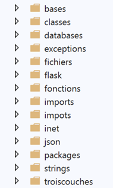

1. مقدمة
ملف PDF لهذا المستند متاح |هنا|.
الأمثلة الواردة في هذا المستند متاحة |هنا|.
يقدم هذا المستند قائمة ببرامج Python النصية في مجالات مختلفة:
- أساسيات اللغة؛
- إدارة قواعد بيانات MySQL و PostgreSQL؛
- برمجة شبكات TCP/IP (بروتوكولات HTTP و POP3 و IMAP و SMTP)؛
- برمجة الويب MVC باستخدام إطار عمل FLASK؛
- البنى ثلاثية المستويات والبرمجة القائمة على الواجهة؛
هذه ليست دورة شاملة في لغة Python، بل هي مجموعة من الأمثلة المخصصة للمطورين الذين سبق لهم استخدام لغة برمجة نصية مثل Perl أو PHP أو VBScript، أو للمطورين المعتادين على اللغات المكتوبة مثل Java أو C# والذين يرغبون في اكتشاف لغة برمجة نصية موجهة للكائنات. هذا المستند غير مناسب للقراء الذين لديهم خبرة قليلة أو معدومة في البرمجة.
كما أن هذا المستند ليس مجموعة من "أفضل الممارسات". قد يجد المطورون ذوو الخبرة أن بعض الأكواد يمكن كتابتها بطريقة أكثر أناقة. الغرض الوحيد من هذا المستند هو تقديم أمثلة لمن يرغب في تعلم Python 3 وإطار عمل Flask. يمكنهم بعد ذلك تعميق فهمهم باستخدام موارد أخرى.
تحتوي البرامج النصية على تعليقات، ويتم عرض نتائج تنفيذها. يتم تقديم تفسيرات إضافية في بعض الأحيان. يتطلب هذا المستند قراءة نشطة: لفهم البرنامج النصي، يجب عليك قراءة الكود الخاص به، وتعليقاته، ونتائج تنفيذه.
الأمثلة الواردة في هذا المستند متاحة |هنا|:

هذا المستند هو تحديث لمستند أقدم نُشر في يونيو 2011 |https://tahe.developpez.com/tutoriels-cours/python/|. تم إنشاء مستند 2011 باستخدام مترجم Python 2.7. ومنذ ذلك الحين، تم إصدار إصدارات Python 3.x. اعتبارًا من فبراير 2020، الإصدار الحالي هو 3.8. أدت إصدارات 3.x إلى حدوث انقطاع في التوافق بين الإصدارات: قد لا يعمل الكود الذي يعمل تحت Python 2.7 تحت Python 3.x. وينطبق هذا بشكل خاص على إخراج وحدة التحكم. في الإصدار 2.7، يمكنك كتابة [print "toto"]، بينما في الإصدار 3.x يجب عليك كتابة [print("toto")]: حيث تكون الأقواس مطلوبة. يعني هذا التغيير البسيط أن معظم الكود المقدم في وثيقة عام 2011 غير قابل للاستخدام مباشرة مع Python 3.x. ويجب تعديله.
لا يقتصر دور هذا المستند الجديد على تحديث كود 2011 لجعله قابلاً للتنفيذ مع Python 3.8 فحسب:
- خضعت الأقسام المتعلقة ببرمجة TCP/IP واستخدام قواعد البيانات لتغييرات كبيرة؛
- أصبح القسم الخاص ببرمجة الويب، الذي كان في السابق مجرد مقدمة، دورة كاملة باستخدام إطار عمل Flask؛
لإعداد هذه الدورة التدريبية، اتبعت نهجًا غير تقليدي: فقد قمت بتحويل دورة PHP [مقدمة إلى PHP7 من خلال الأمثلة]. ولذلك، لم أتبع الهياكل التقليدية لدورات Python أو Flask. وقبل كل شيء، كنت أرغب في معرفة كيف يمكنني تنفيذ ما قمت به في PHP 7 باستخدام Python 3. ونتيجة لذلك، تمكنت من إعادة إنشاء جميع الأمثلة الواردة في دورة PHP 7 باستخدام Python 3 / Flask.
قد يحتوي هذا المستند على أخطاء أو سهو. يمكن للقراء استخدام سلسلة المناقشة |المنتدى| للإبلاغ عنها.
محتويات الوثيقة هي كما يلي:
الفصل | مستودع الكود | المحتويات |
نظرة عامة على المقرر | ||
إعداد بيئة العمل | ||
[الأساسيات] | أساسيات لغة Python – هياكل اللغة – أنواع البيانات – الدوال – إخراج وحدة التحكم – سلاسل التنسيق – تحويل الأنواع – القوائم – القواميس – التعبيرات | |
[سلاسل] | ترميز السلسلة – طرق فئة فئة <str> – ترميز/فك ترميز السلاسل في UTF-8 | |
[الاستثناءات] | معالجة الاستثناءات | |
[الوظائف] | نطاق المتغيرات – المعلمات التمرير – استخدام الوحدات النمطية – مسار مسار Python – المعلمات المعلمات – الفصل | |
[الملفات] | قراءة/كتابة ملف نصي – التعامل مع الملفات المشفرة بـ UTF-8 – التعامل مع ملفات JSON | |
[taxes/v01] | الإصدار 1 من التطبيق تمرين: حساب ضريبة الدخل . التطبيق متوفر في 18 إصدارات – الإصدار 1 يطبق حل إجرائي | |
[يستورد] | إدارة التطبيقات عن طريق استيراد الوحدات النمطية – يتم عرض طريقة طريقة لإدارة التبعيات – يتم استخدامها في جميع أنحاء الوثيقة – إدارة مسار Python | |
[impots/v02] | الإصدار 2 من التطبيق تستند إلى الإصدار 1 من خلال تجميع جميع ثوابت التكوين في ملف تكوين يقوم أيضًا مسار Python | |
[impots/v03] | الإصدار 3 من التطبيق تستند إلى الإصدار 2 باستخدام الوظائف المُغلفة في وحدة نمطية — تتم يتم التعامل مع إدارة التبعيات عبر التكوين — إدخال ملف JSON لقراءة البيانات المطلوبة لحساب الضرائب وكتابة نتائج الحساب | |
[classes/01] | الفئات – الوراثة – الطرق والخصائص – أدوات الاسترجاع/التعيين – المنشئ – [__dict__] الخاصية | |
[classes/02] | مقدمة إلى فئتي [BaseEntity] و[MyException] المستخدمتين في بقية الوثيقة – [BaseEntity] تسهل تحويلات الكائنات/القواميس التحويلات | |
[ثلاث طبقات] | البنية الطبقية و البرمجة القائمة على الواجهة. يقدم هذا الفصل طرق البرمجة المستخدمة في بقية الوثيقة | |
[taxes/v04] | الإصدار 4 من التطبيق – هذا تنفذ هذه النسخة حلاً بهيكلية متعددة الطبقات، والبرمجة القائمة على الواجهات، و استخدام فئات مشتقة من [BaseEntity] و [MyException] | |
[قواعد البيانات/mysql] | تثبيت نظام إدارة قواعد البيانات MySQL – الاتصال بقاعدة البيانات – إنشاء جدول – تنفيذ أوامر SQL SELECT و UPDATE و DELETE و INSERT – المعاملات – استعلامات استعلامات SQL | |
[قواعد البيانات/postgresql] | تثبيت نظام إدارة قواعد البيانات PostgreSQL – الاتصال بقاعدة البيانات – إنشاء جدول – تنفيذ أوامر SQL SELECT و UPDATE و DELETE و INSERT – المعاملات – استعلامات SQL استعلامات SQL | |
[قواعد البيانات/أي نظام إدارة قواعد البيانات] | كتابة كود مستقل عن نظام إدارة قواعد البيانات | |
[قواعد البيانات/sqlalchemy] | SqlAlchemy ORM (Object- ) – ORM يتيح نهجًا موحدًا العمل مع أنظمة إدارة قواعد البيانات المختلفة – ربط الفئات بجداول SQL – العمليات على الفئات تمثل جداول SQL | |
[taxes/v05] | الإصدار 5 من تطبيق حساب الضرائب – استخدام بنية الطبقات من الإصدار 04 و SqlAlchemy ORM للعمل مع أنظمة إدارة قواعد البيانات أنظمة إدارة قواعد البيانات | |
[inet] | البرمجة على الويب – بروتوكول TCP/IP (بروتوكول التحكم في الإرسال / بروتوكول الإنترنت) – بروتوكولات HTTP (بروتوكول نقل النص التشعبي ) – SMTP (بروتوكول نقل البريد البسيط) – POP (بروتوكول مكتب البريد) – IMAP (بروتوكول الوصول إلى رسائل الإنترنت ) | |
[flask] | خدمات الويب باستخدام إطار عمل الويب Flask – عرض صفحة HTML – خدمة ويب JSON – طلبات GET و POST – إدارة جلسة الويب | |
[impots/http-servers/01] [taxes/http-clients/01] | الإصدار 6 من التطبيق تمرين – إنشاء خدمة ويب JSON لحساب الضرائب باستخدام بنية متعددة الطبقات – كتابة عميل ويب لهذا الخادم باستخدام البنية متعددة الطبقات – برمجة العميل/الخادم – استخدام وحدة [requests] | |
[taxes/http-servers/02] [الضرائب/عملاء HTTP/02] | الإصدار 7 من التطبيق تمرين – تم تحسين الإصدار 6: العميل والخادم متعدد الخيوط – [Logger] أدوات لتسجيل تبادلات العميل/الخادم التبادلات – [SendMail] لإرسال رسالة بريد إلكتروني إلى التطبيق | |
[taxes/http-servers/03] [الضرائب/عملاء http/03] | الإصدار 8 من التطبيق تمرين – تم تحسين الإصدار 7 باستخدام جلسة ويب | |
[xml] | إدارة XML (لغة الترميز الموسعة ) باستخدام وحدة وحدة [xmltodict] | |
[taxes/http-servers/04] [impots/http-clients/04] | الإصدار 9 من التطبيق تمرين – تم تعديل الإصدار 8 لتضمين التبادلات بين العميل والخادم في XML؛ | |
[taxes/http-servers/05] [الضرائب/عملاء http/05] | الإصدار 10 من التطبيق تمرين – بدلاً من معالجة N دافع ضرائب عبر N طلبات GET، يتم استخدام يتم استخدام طلب POST واحد مع مع دافعي الضرائب N في نص . | |
[taxes/http-servers/06] [الضرائب/عملاء HTTP/06] | الإصدار 11 من التطبيق تمرين – بنية العميل/الخادم : تنتقل طبقة [الأعمال] من الخادم إلى العميل | |
[الضرائب/خوادم http/07] | الإصدار 12 من تمرين – هذا الإصدار يطبق خادم MVC (نموذج – عرض – ) يقدم JSON و XML و HTML بشكل متبادل، اعتمادًا على طلب العميل. هذا الفصل يُنفذ إصداري JSON و XML للخادم | |
[impots/http-clients/07] | تنفيذ عملاء JSON و XML لخادم MVC في الإصدار 12 | |
[impots/http-servers/07] | تنفيذ خادم HTML في الإصدار 12 – باستخدام إطار عمل Bootstrap CSS – | |
[impots/http-servers/08] | الإصدار 13 من التطبيق – إعادة هيكلة الكود من الإصدار 12 – إدارة باستخدام وحدة [flask_session] وخادم خادم Redis – باستخدام كلمات المرور | |
[impots/خوادم_HTTP/09] [impots/http-clients/09] | الإصدار 14 من التطبيق تمرين – تنفيذ عناوين URL باستخدام رمز CSRF (تزوير الطلبات عبر المواقع ) | |
[impots/http-servers/10] | الإصدار 15 من التطبيق تمرين – إعادة هيكلة الكود من الإصدار 14 للتعامل مع نوعين نوعين من الإجراءات: ASV (عرض الإجراء Show View)، والتي تُستخدم فقط لعرض طريقة عرض دون تعديل حالة الخادم، و ADS (Action Do Something)، والتي تقوم بتنفيذ إجراء يغير حالة الخادم — تنتهي جميع هذه تنتهي جميعها بإعادة توجيه إلى إجراء ASV — وهذا يسمح التعامل السليم مع عمليات تحديث الصفحة في متصفح العميل | |
[impots/http-servers/11] | الإصدار 16 من التطبيق – إدارة عناوين URL باستخدام البادئات | |
[impots/http-servers/12] | الإصدار 17 من التطبيق – نقل الإصدار 16 إلى خادم Apache/Windows | |
[impots/http-servers/13] | الإصدار 18 من التطبيق – يصلح خطأ في الإصدار 17 |
الإصدار النهائي لمشروع التطبيق هو تطبيق لحساب الضرائب يعمل بنظام العميل/الخادم ويتميز بالبنية التالية:

يتم تنفيذ الطبقة [الويب] أعلاه باستخدام بنية MVC:

محتوى هذا المستند مكثف. سيكتسب القراء الذين يقرؤونه حتى النهاية فهمًا راسخًا لبرمجة الويب MVC في Python/Flask، وأكثر من ذلك، فهمًا راسخًا لبرمجة الويب MVC في لغات أخرى.
يمكن للقراء الذين يفضلون الاطلاع على الكود واختباره وتعديله بدلاً من قراءة محاضرة أن يتبعوا الخطوات التالية:
- إعداد بيئة التطوير:
- مترجم Python؛
- بيئة تطوير PyCharm Community IDE؛
- Laragon (خادم Apache، نظام إدارة قواعد البيانات MySQL، خادم Redis)؛
- قاعدة بيانات PostgreSQL؛
- عميل HTTP Postman؛
- خادم البريد hMailServer؛
- استكشف الكود في الأمثلة |هنا|:

- في كل مجلد، يوجد ملف [README.md] يربط المجلد بفصل من الدورة ويلخص محتوياته:
يبدو ملف [README.md] كما يلي:

من غير المرجح أن يقرأ القارئ الدورة التدريبية بأكملها:
- قد يقرأ القارئ المبتدئ الفصول من 1 إلى 15 ويتوقف عند هذا الحد. يمكنه بعد ذلك قضاء بعض الوقت في كتابة نصوص Python الخاصة به قبل العودة إلى هذه الدورة التدريبية؛
- قد يجد القراء الذين لديهم فهم أساسي لـ Python ويرغبون في التعرف على قواعد البيانات و ORM (Object Relational Mapper) [SQLAlchemy] أن الفصول من 16 إلى 20 كافية؛
- يمكن للقراء الراغبين في تعلم برمجة الويب (HTTP، SMTP، POP3، IMAP) قراءة الفصل 21. هذا الفصل معقد للغاية ويغطي البرامج النصية المتقدمة. يمكن قراءته على مستويين:
- لتعلم بروتوكولات الإنترنت؛
- للحصول على نصوص برمجية تستخدم هذه البروتوكولات؛
- يجب على القراء الذين لديهم فهم أساسي للغة Python ويرغبون في تعلم برمجة الويب باستخدام إطار عمل Flask قراءة الفصل 22؛
- يمكن للقراء الراغبين في التعمق أكثر في برمجة الويب باستخدام إطار عمل Flask دراسة الفصول من 23 إلى 38. تغطي هذه الفصول تطوير تطبيقات عميل/خادم متزايدة التعقيد، بالإضافة إلى تطبيق HTML/Python يتبع نمط التطوير MVC (نموذج-عرض-وحدة تحكم). تم تطوير هذا التطبيق في الفصل 32. يمكنك التوقف عند هذا الحد. تقدم الفصول التالية تغييرات غير أساسية؛
سيرج تاهي، سبتمبر 2020